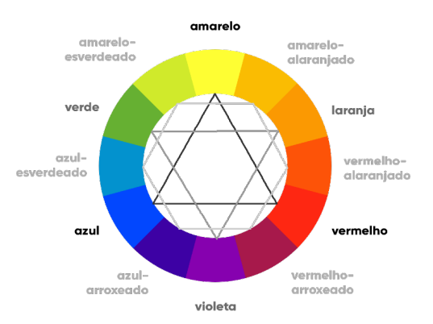
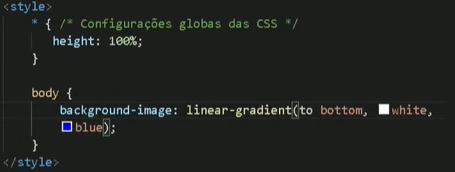

CORES
Formas de escrever as cores:
- Nome:
- Escrever o nome da cor. Por exemplo: green, black, white, blue, etc.
- Hexadecimal:
- Escrever em códigos hexadecimais. Por exemplo: #0000ff, #ffffff, etc.
- RGB:
- RGB (Red, Green, Blue). Por exemplo: rgb(0, 0, 255), rbg(255, 255, 255), etc.
- HSL:
- HSL (Hue, Sturation, Luminosity). Por exemplo: hsl(240, 100% 50%), hsl(0, 0%, 100%), etc.
- Adicionando Transparência:
- Para adicionar transparência, basta usar "a" em rbga ou hsla
Cores Cromáticas:

Para saber mais sobre as cores cromáticas e seu uso, veja o PDF: 13 - cores
- Paleta de Cores:
Para acessar uma paleta de cores que te ajude na coloração do seu site, fazendo com que as cores sejam relacionadas, entre no site: https://color.adobe.com/pt/.
Também pode recorrer ao site: paletton.com
Também tem o site: coolors.co
- Pegar cor de algum lugar:
Para pegar a cor de algum site ou algum lugar no navegador, pode baixar o ColorZilla e usar na extensão do Google Chrome.
Degradê:
Para usar o degradê, use o parâmetro background-image: [parâmetro] dentro da [tag] que deseja na tag <style>.
Parâmetros:
- linear-gradient:([para onde], [de que cor], [para que cor])
- Se no [para onde] for usar to top ou to bottom, deve-se criar um seletor global *, dentro de style, e dentro colocar height: 100%. Como exemplo abaixo:

- No [de que cor] [para que cor], pode colocar várias cores, dizendo o caminho de cores que deve percorrer para formar o degradê.
- gradial-gradient([forma],[de que cor], [para que cor])
OBS1:Use background-attachment: fixed; para corrigir o erro do degradê e deixá-lo fixo.
OBS2:Pode colocar % na cor para regular. Por exemplo: background-image: linear-gradient(to right, [cor1] 10%, [cor2],50%, [cor3])